Use only these images. Record answers before viewing any source or answer key. Responses remain in your browser; copy them into the review report.
Assign each image to ENTRY RAMP, PAD UNDERSIDE, SCORCHED ZONE or DELUGE EXIT. The pack includes three dedicated transition captures. Whenever a change is visible, also describe it as “the change from X to Y”. There is no HUD. Images are shuffled.
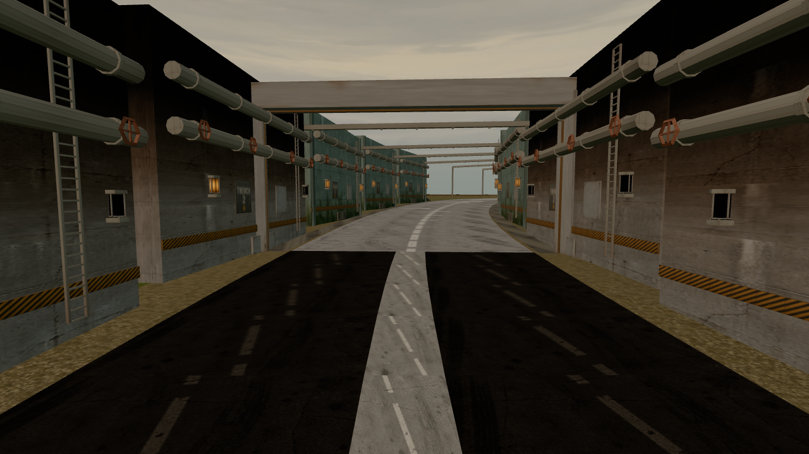
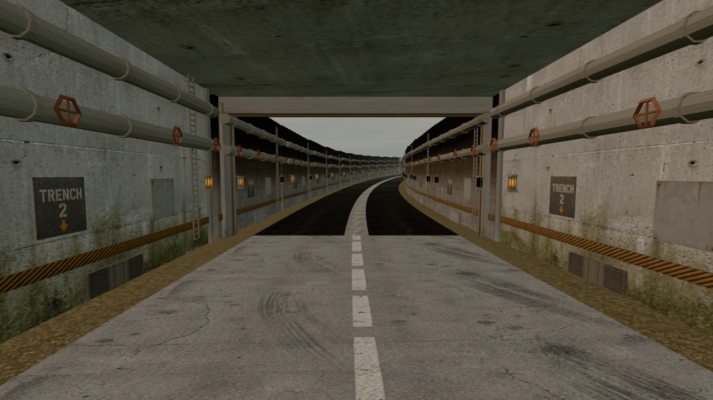
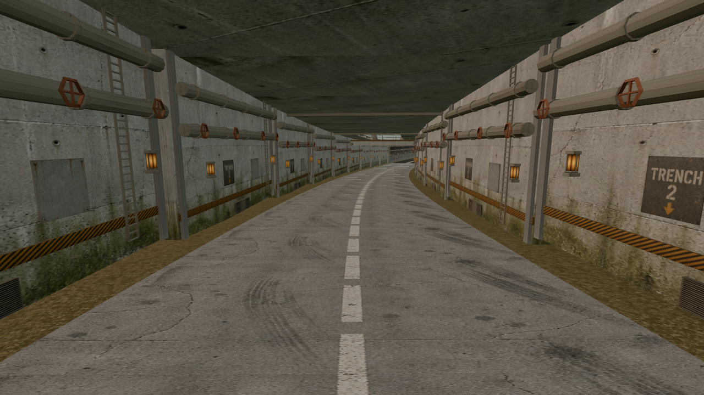
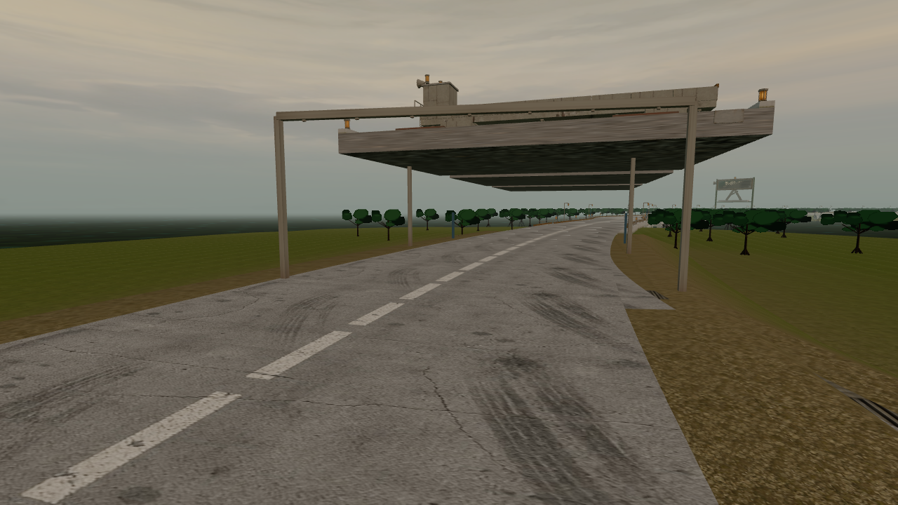
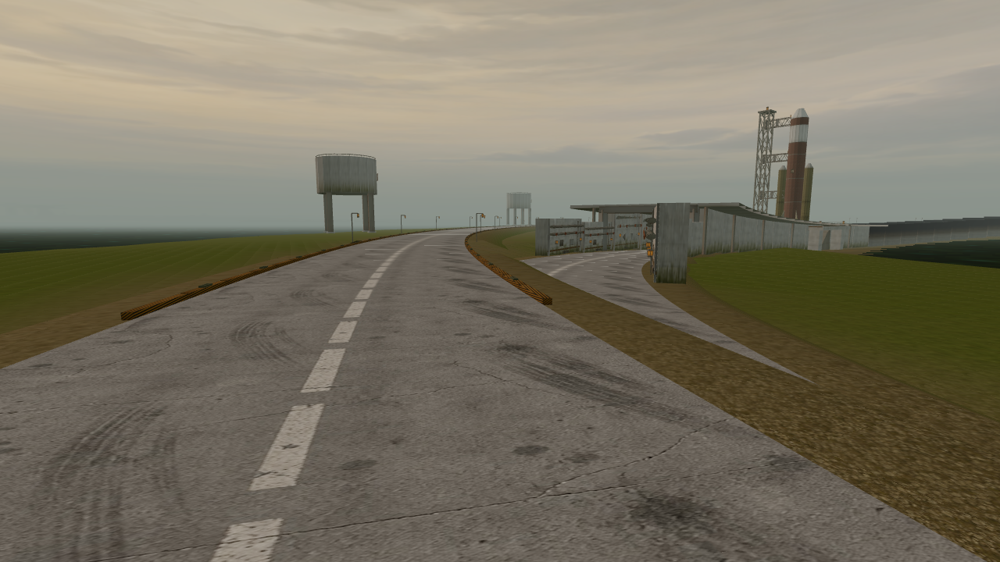
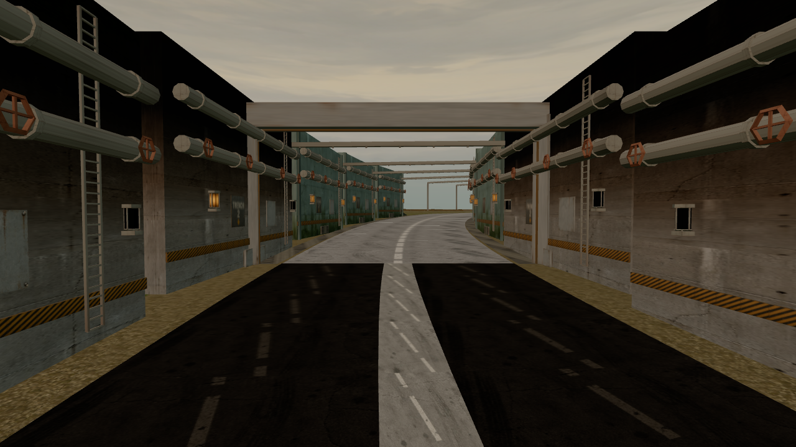
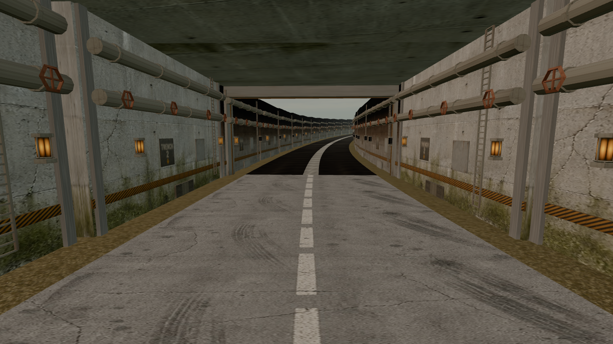
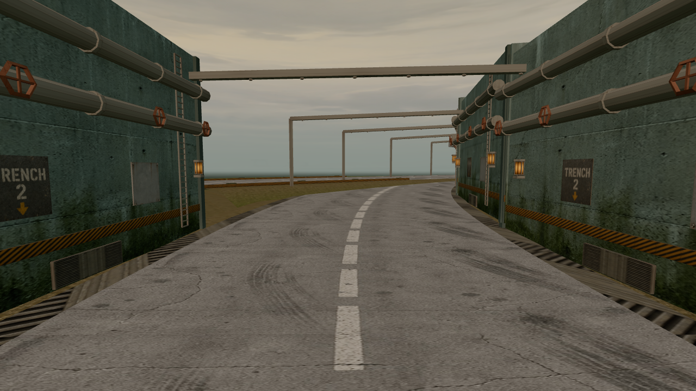
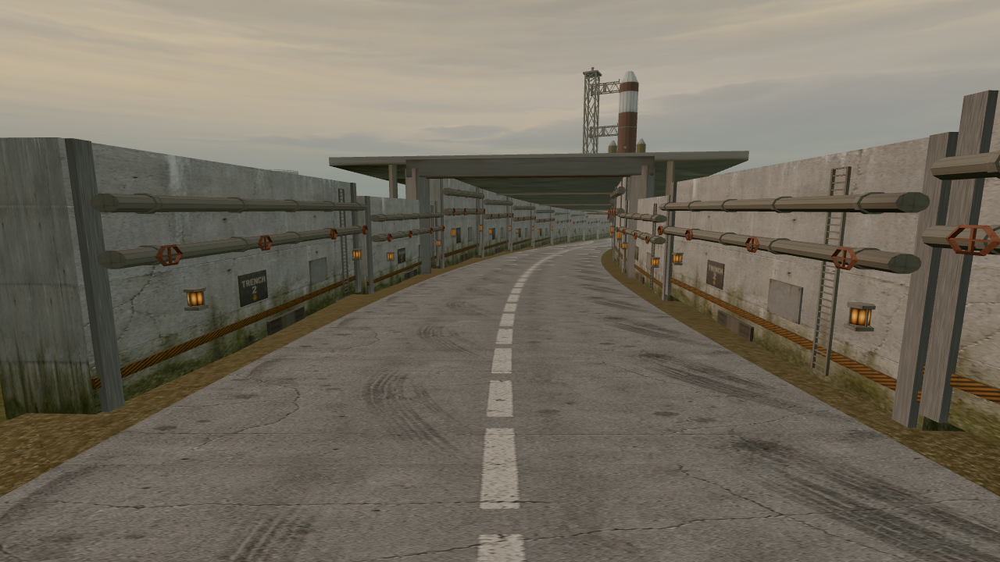
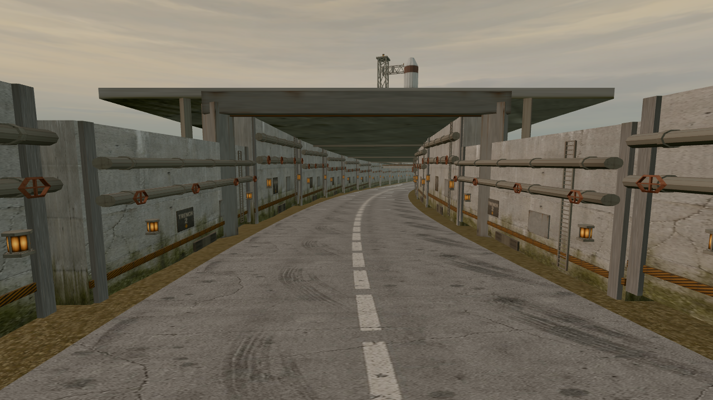
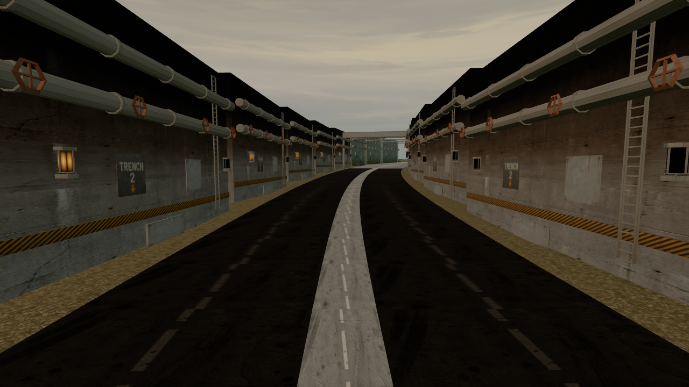
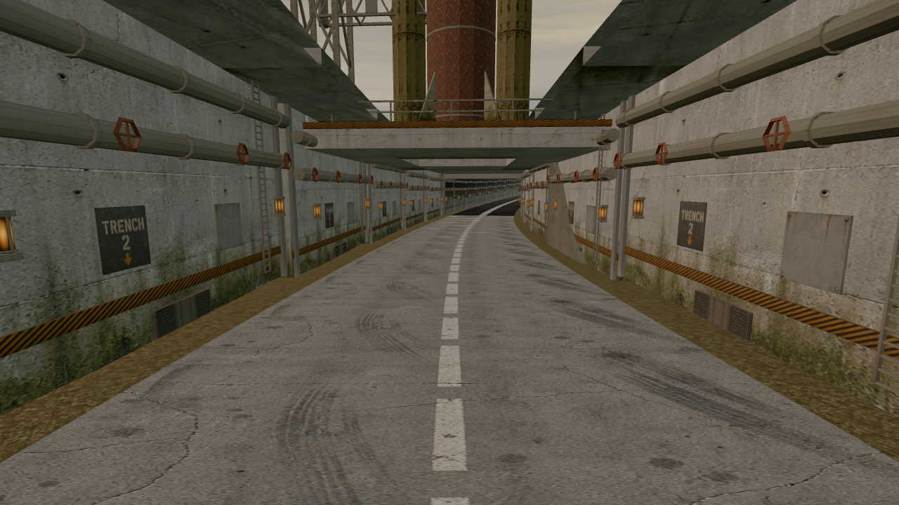
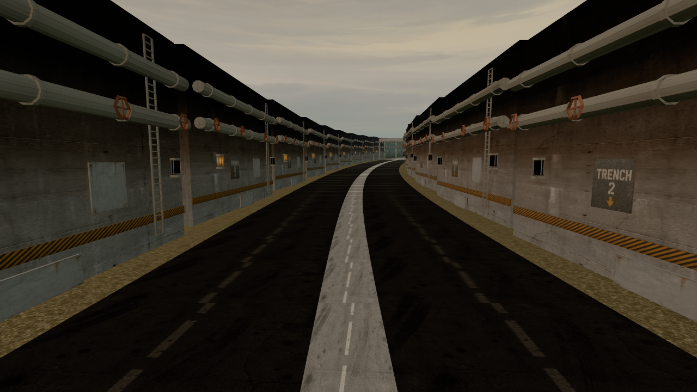